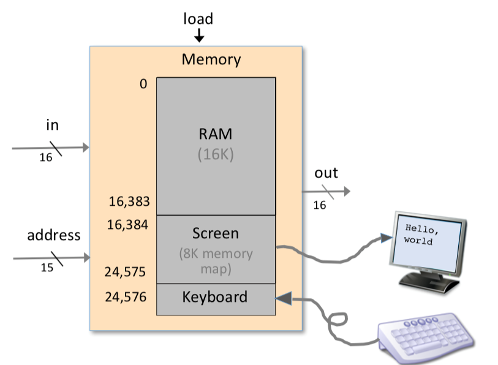
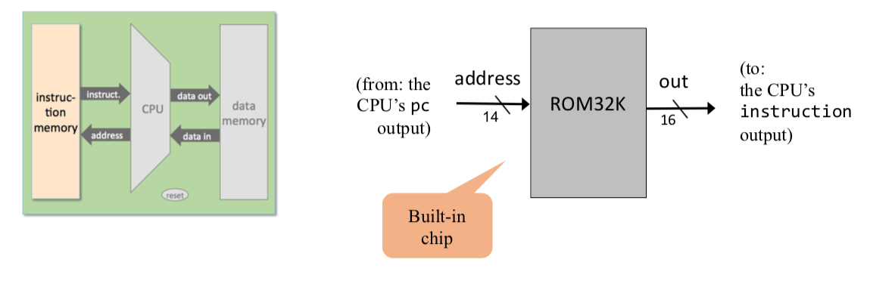

the memory is a linear sequence of addressable registers, each having a unique address and a value, which is a fixed-size word of information.
he memory is divided into two areas. One area is dedicated for storing data,e.g. the arrays and objects of programs that are presently executing, while the other area is dedicated for storing the programs’ instructions.
High-level programs manipulate abstract artifacts like variables, arrays, and objects. After the programs are translated into machine language, these data abstractions become binary codes, stored in the computer’s memory. Once an individual register has been selected from the memory by specifying its address, its contents can be either read or written to.
Before high-level programs can be executed on the computer, they must be translated into machine language. These instructions are stored in the computer’s instruction memory as binary codes. In each step of a program’s execution, the CPU fetches (i.e., reads) a binary machine instruction from a selected register in the instruction memory, decodes it, executes the specified instruction, and figures out which instruction to fetch and execute next.
